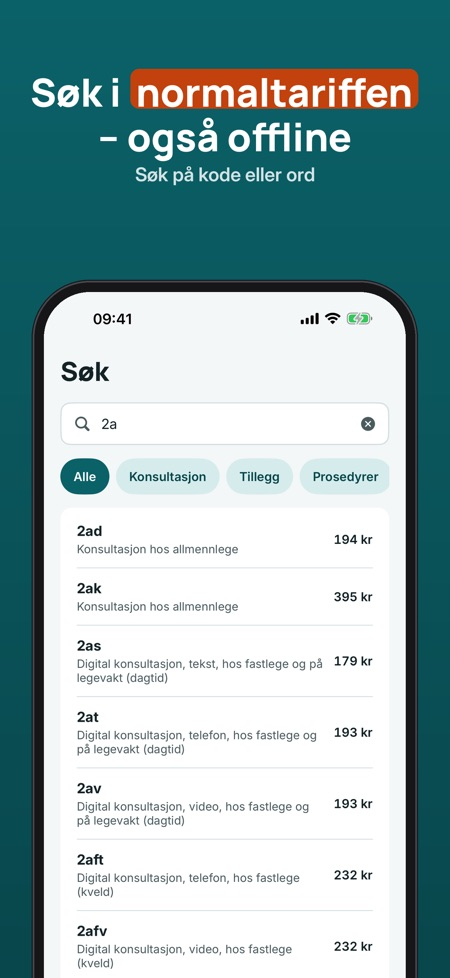
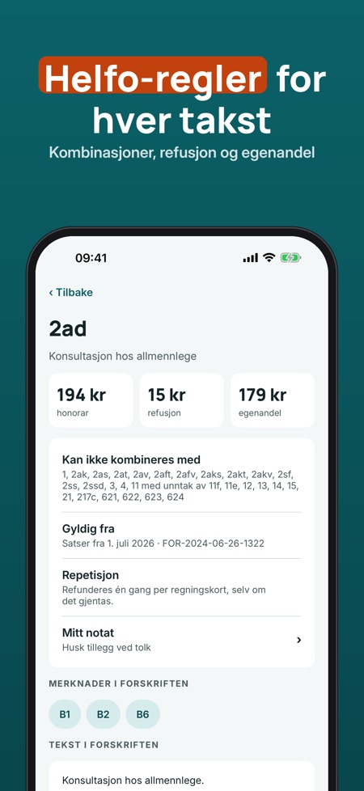
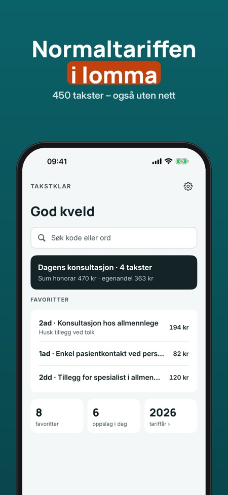

Takstklar er et oppslagsverk for leger i Norge. Søk på takstkode eller ord, se satser og regler, og sett sammen takstene for et besøk.



Leger i Norge som trenger et oppslagsverk for takster.
Takstene i kapittel II i forskrift om stønad til dekning av utgifter til undersøkelse og behandling hos lege (FOR-2024-06-26-1322), med satser fra 1. juli 2026.
Ja, du kan søke på takstkode eller ord uten nett.
Ja, appen viser ugyldige kombinasjoner og merknader fra forskriften.
Søk, takstdetaljer, 5 favoritter og de siste 10 oppslagene.
Nei. Full versjon er et engangskjøp som låser opp konsultasjonen med sum, maler, notater, ubegrenset favoritter og hele historikken.
Ja, appen har nedtelling og varsel før ny tariff 1. juli.
Nei, den er ikke tilknyttet Legeforeningen, Helfo eller Helse- og omsorgsdepartementet. Kontroller alltid satser og regler mot gjeldende tariff.
Takstklar er et oppslagsverk for leger i Norge: søk i normaltariffen, se satser og regler for hver takst og sett sammen takstene for et besøk – lagret på telefonen.
Tabellen er takstene i kapittel II i forskrift om stønad til dekning av utgifter til undersøkelse og behandling hos lege (FOR-2024-06-26-1322), med satser fra 1. juli 2026. Inneholder data under Norsk lisens for offentlige data (NLOD 2.0) tilgjengeliggjort av Lovdata.
Søk, takstdetaljer, 5 favoritter og de siste 10 oppslagene kan brukes uten kjøp. Full versjon er et engangskjøp som låser opp konsultasjonen med sum, maler, notater, ubegrenset favoritter og hele historikken. Ingen abonnement.
Takstklar er et oppslagsverk og er ikke tilknyttet Legeforeningen, Helfo eller Helse- og omsorgsdepartementet. Kontroller alltid satser og regler mot gjeldende tariff. Du har selv ansvaret for oppgjøret.